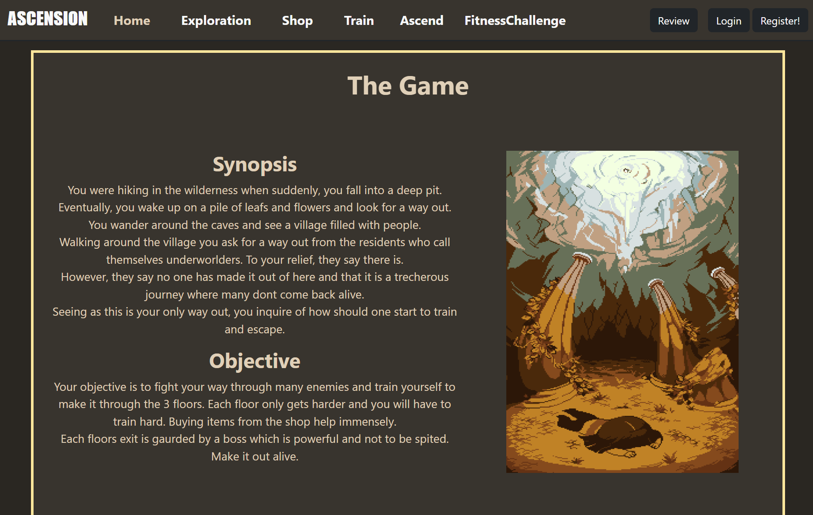

Experiences
Projects
Web Browser Game


This project involved creating an interactive web-based game using JavaScript, HTML5, and CSS, which challenged me to:
- Combine front-end technologies to develop engaging gameplay mechanics
- Solve creative programming challenges through innovative problem-solving
- Debug and optimize code for smooth performance
3D-Printed Fidget Spinner
This was my first experience with 3D printing and CAD design using Fusion 360. The project challenged me to:
- Design functional mechanical components with precise measurements
- Understand material properties and printing constraints
- Troubleshoot design iterations to achieve smooth rotation
Project Effective Care
As my AEC final project, "Project Effective Care" involved educating Singapore Polytechnic students about assisting People With Disabilities (PWDs) on public transport. This initiative:
- Developed my ability to communicate complex accessibility concepts
- Enhanced my teamwork and project management skills
- Deepened my understanding of inclusive design principles